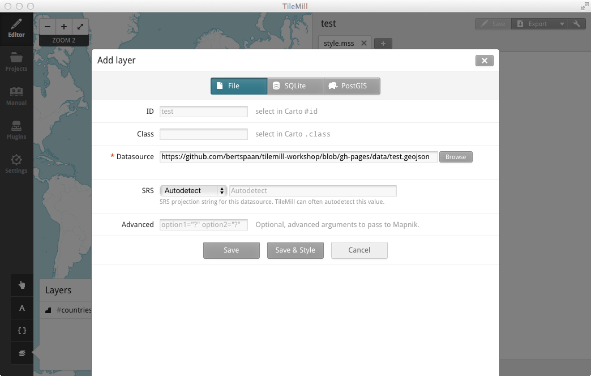

Bert Spaan, Waag Society
@water: blue;
@land: green;
#countries {
line-color: black;
line-width: 2px;
polygon-fill: @land;
}
#water {
polygon-fill: @water;
}
#urban {
polygon-fill:#9F6;
polygon-opacity:0.66;
line-color:#9F6;
line-opacity:0.33;
[zoom=3] { line-width:0.4; }
[zoom=4] { line-width:0.6; }
[zoom=5] { line-width:0.8; }
[zoom=6] { line-width:1; }
[zoom>6] { line-width:1.2; }
}
#country-labels[zoom>3] {
text-name:'[NAME]';
text-face-name:@sans;
text-fill:#8EF * 0.7;
text-size:10;
text-transform:uppercase;
text-character-spacing:1;
text-wrap-width:40;
text-line-spacing:2;
text-halo-radius:2;
text-halo-fill:rgba(0,0,0,0.75);
[zoom=6] { text-size:11; }
[zoom=7] { text-size:12; }
[zoom=8] { text-size:14; }
[zoom>8] { text-size:16; }
}
#japan {
raster-opacity:1;
raster-scaling:gaussian;
raster-colorizer-default-mode:exact;
raster-colorizer-default-color: transparent;
raster-colorizer-epsilon:0.41;
raster-colorizer-stops:
stop(0, transparent)
stop(1, @water)
stop(2, @urban)
stop(4, @agriculture)
stop(5, @grass)
stop(9, @forest)
stop(11, @snow)
}
import ogr
import pylab
from numpy import asarray
from shapely.wkb import loads
source = ogr.Open("/var/gis/data/world/world_borders.shp")
borders = source.GetLayerByName("world_borders")
fig = pylab.figure(1, figsize=(4,2), dpi=300)
while 1:
feature = borders.GetNextFeature()
if not feature:
break
geom = loads(feature.GetGeometryRef().ExportToWkb())
a = asarray(geom)
pylab.plot(a[:,0], a[:,1])
pylab.show()
https://github.com/bertspaan/tilemill-workshop/blob/gh-pages/data/test.geojson

#test {
line-color: #7f0342;
line-width: 5px;
polygon-fill: lighten(#7f0342, 50%);
[n=1] {
polygon-fill: lighten(#7f0342, 20%);
}
[n=4], [n=5] {
marker-width: 40px;
marker-line-width: 5px;
marker-line-color: darken(#678743, 20%);
marker-fill: #678743;
}
}
SELECT
identificatie, bouwjaar, geom
FROM
pand;
Map {
background-color: black;
}
#pand {
[bouwjaar<1800] { polygon-fill: #A50026; }
[bouwjaar>=1800][bouwjaar<1850] { polygon-fill: #D73027; }
[bouwjaar>=1850][bouwjaar<1900] {polygon-fill: #F46D43; }
[bouwjaar>=1900][bouwjaar<1930] { polygon-fill: #FDAE61; }
[bouwjaar>=1930][bouwjaar<1945] { polygon-fill: #FEE090; }
[bouwjaar>=1945][bouwjaar<1960] { polygon-fill: #FFFFBF; }
[bouwjaar>=1960][bouwjaar<1975] { polygon-fill: #E0F3F8; }
[bouwjaar>=1975][bouwjaar<1985] { polygon-fill: #ABD9E9; }
[bouwjaar>=1985][bouwjaar<1995] { polygon-fill: #74ADD1; }
[bouwjaar>=1995][bouwjaar<2005] { polygon-fill: #4575B4; }
[bouwjaar>=2005] { polygon-fill: #313695; }
}
bertspaan.nl/tilemill-workshop
user: BK-osgeonldag
pass: 01.West.430